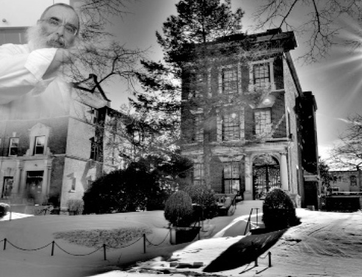

Serving in Beis Rebbi
R’ Amram Malka from Rishon L’Tziyon went on K’vutza in 5726. That year, he had the opportunity to help out in the Rebbe’s home and the home of Rebbetzin Nechama Dina, wife of the Rebbe Rayatz. The two Rebbetzins were mekarev him and he had a special relationship with them and the Rebbe. * R’ Amram Malka reminisces.

Till today, R’ Amram Malka does not know how he merited the privilege of helping as mashbak (abbrev. meshamesh ba’kodesh, lit. one who serves in the holy) throughout his year on K’vutza, 5726, in the Rebbe’s home and in Rebbetzin Nechama Dina’s home. He has precious memories, such as the time he returned from Tahalucha on Shavuos and the Rebbe asked that they call him and find out if he had eaten yet, or Rebbetzin Chaya Mushka giving his wife a wedding gift as well as old shirts and coats of the Rebbe’s.
R’ Malka was born in Casablanca. His family made aliya when he was a child and settled in Pardes Chana. Seven years later, they moved to B’nei Brak. With amazing Divine Providence, when he was eleven, he and some of his brothers switched to the Chabad yeshiva in Lud. “If not for that, I would be in a different place today. The Rebbe Rashab chose our neshamos.”
R’ Malka and his family now live in Rishon L’Tziyon and are part of the Chabad k’hilla there. His friends will tell you that he is a Chassid with noble middos. He leads the way when it comes to the Rebbe and his mivtzaim. Despite his age, he works with youthful energy and regularly delivers speeches full of passion for the Rebbe, spiced with personal stories at farbrengens and gatherings at Chabad houses. “I kept diaries with every story and experience as each one happened.”
FROM THE TRANSIT CAMP TO TOMCHEI T’MIMIM
As mentioned earlier, the Malka family moved to Eretz Yisroel at the beginning of the 50’s and was placed by the Jewish Agency and aliya activists in Pardes Chana. Many immigrants, especially the young ones, loved the atmosphere of freedom and pioneering spirit, which lead them off the path of Torah. The Malka family was different, for the head of the family was a Yerei Shamayim who demanded of himself and his children to follow the straight and narrow.
“My father was very close to the rav of Pardes Chana, Rabbi Diskin. He didn’t care whether the rabbi was Ashkenazi or Sefardi; he sought a Torah figure as a mentor and this rabbi fit the bill.
“For a brief time we attended a public school which prided itself on its traditional stance, but my father quickly realized this wasn’t for us. He put us into a religious school, which had opened under the directorship of Rabbi Mordechai Barnes.
“Poverty made life difficult. I remember that my parents got food coupons and we waited in line for hot soup. Many were emotionally broken by this and threw off the yoke of Torah, but my father was hard as steel. He organized demonstrations in the immigrant camp so that the government would make more resources available to immigrants. He was unwilling to accept that this should come at the expense of tradition.
“Our family cooperated with the Lubavitcher men who worked to save the youth from a secular education. I remember R’ Dovid Lesselbaum and others who came to the immigrant camp. We did not know they were Lubavitchers and received their orders from the Rebbe.
“After seven years in Pardes Chana, my father decided that this wasn’t a good place for our education and we moved to a small apartment in Shikun Vav in B’nei Brak. We attended the local elementary school yeshiva. When I turned 12, I went to yeshiva at the suggestion of R’ Refael Abu of Teveria, who was the Av Beis Din in Tel Aviv. My father got to know him in Morocco after he had put in much hard work to fortify the walls of Judaism and he had started Yeshivas Otzar Ha’Torah.
“That was in 1958. In Tel Aviv there was a Sephardic yeshiva with an excellent reputation, Rabbi Chafuta’s yeshiva. My father was determined that we would learn there and he asked R’ Abu for his bracha. My twin brother Avrohom and I had already packed our suitcases, but my father got the idea in his head that he still hadn’t consulted with his rav and we went to Teveria.
“R’ Abu decided that we wouldn’t learn in Tel Aviv but in Lud, in the Lubavitcher yeshiva. R’ Abu’s son, Yehuda, was learning in Lud. We went to Lud that same day. We knew nothing about Chabad and the one who welcomed us there so warmly was Rabbi Eliezer Horowitz.
“Learning in the yeshiva in Pardes Lud was quite an experience. Many of the talmidim were immigrants and the student population consisted of Yemenites, Russians, etc. We quickly acclimated and loved it there.
“The counselors were R’ Aharon Teichman and R’ Moshe Hillel, who soon got us involved in everything. After being with the Rebbe, they were able to convey the experience in a special way. Everyone crowded around them to hear what they had to say. When we heard that R’ Zushe Posner had come from the Rebbe and was at the train station, we all left yeshiva on the spur of the moment and ran to the station to escort him with song and simcha. He emotionally described to us what he had seen and heard in Beis Chayeinu.
“We felt we had gone up a rung in ruchnius. My bar mitzva was celebrated in B’nei Brak and all my classmates came on the yeshiva van, driven by R’ Yisroel Kook. I reviewed the maamer ‘U’Maayan Yatza M’Beis Hashem.’ The celebration turned into a Chassidishe farbrengen.
“Every now and then we would write pidyonos to the Rebbe. We did this with great emotion. Although we did not come from Lubavitcher homes, we understood the import of writing to the Rebbe.”
MASHBAK
When R’ Amram finished learning in Lud, he learned for another three years in Tomchei T’mimim in Kfar Chabad. These three years transformed him into a Chassid. He and his brother began to keep Chabad customs.
“For Tishrei 5726/1965 we went to 770 for our year on K’vutza. The initial plan was to remain there for half a year, until after Pesach, but we ended up spending a year there, until after Tishrei 5727. I still remember reciting the SheHechiyanu blessing when we saw the Rebbe for the first time.
“Purim time, half a year after we had arrived, was very joyous. This Purim was later referred to as Purim HaGadol. Mashke flowed and the Rebbe spoke about ‘empty vessels do not lessen.’ Three bachurim from K’vutza – Zalman Gopin, Nachum Zevin, and Sholom Ber Wolpo – took advantage of the auspicious moment to ask the Rebbe for a bracha that K’vutza not end after Pesach, but continue for an entire year until after Tishrei 5727. The Rebbe gave his bracha that this should work out legally and that is what happened. The IDF gave permission for another half a year.
“My first connection with Beis Rebbi began shortly after I arrived at 770. Before Sukkos, R’ Shlomo Reinitz tapped me on the shoulder and said, ‘Amram, come help me put the Rebbe’s sukka together.’ I was happy to oblige. The sukka that we built was in the Rebbe Rayatz’s home upstairs. Then we built Rashag’s sukka and then the Rebbe’s sukka on President Street.
“I will never forget the excitement I felt. Out of thousands of Chassidim, I was picked! What a z’chus!
“We went upstairs and met Rebbetzin Nechama Dina. Reinitz introduced me as Amram Malka from Morocco. She did not hear well and we communicated through writing.
The wood was in the basement and we brought up the boards which were damp and old. We built the sukka on the porch. At a certain point, I opened one of the doors and waited for Reinitz who was supposed to come. The Rebbetzin came out and asked me not to stand there. At first, I did not understand why not. After we finished building the sukka I asked Reinitz, who explained that that room was the yechidus room and it was where they did the tahara of the Rebbe Rayatz. It was a room that people did not enter.
“The next day, we built Rashag’s sukka. After that, I came and went from the Rebbe Rayatz’s home. Whenever Sholom Gansbourg or Shlomo Reinitz needed help with something, they called me. When we built the Rebbe’s sukka on President Street, we entered through the front door and went through the kitchen where we met Rebbetzin Chaya Mushka. She greeted us, looking most regal. We went up and down the stairs many times in order to bring up the sukka boards. The Rebbetzin offered us apples and apple juice.
“Pesach time, I was asked to help with the cleaning. I helped the Rebbetzin’s aide, Mrs. Mussia, quite a bit.
“To my great surprise, I was invited to eat with the Rebbe on Pesach. The meal took place in the Rebbe Rayatz’s home. The Rebbe and Rashag sat facing one another and in the center was the Rebbe Rayatz’s empty chair. I squeezed in a corner, among the elder Chassidim at the end of the Rebbe’s side of the table.
“That was the first Chabad seder I had ever seen. I had only seen Moroccan s’darim until that point. Sholom Gansbourg served and sometimes he gave me the honor of serving the Rebbe and taking away the plates. The Rebbe always said ‘yashar ko’ach.’ The Rebbe was particular about this in every circumstance. With both the Rebbe and the Rebbetzin one could see the concern and great sensitivity in every detail. The Rebbe would not start eating until everyone was served, including us, the waiters. He would glance towards his side of the table and the other side, and only when he saw everyone seated did he begin to eat.
“I was shy; if I hadn’t been expressly called and invited, I would not have come.
“On Shavuos of that year, I decided that even though I was mashbak, I still wanted to fulfill the Rebbe’s horaa and go on Tahalucha. That being the case, I did not make an appearance to help serve at the table, but instead I left with some people for a distant shul. I thought that after the davening everyone ate and went to 770 and then the Rebbe came down from the Rebbe Rayatz’s apartment to bless those who had gone on Tahalucha. I left hungry and returned hungry. I hadn’t made Kiddush and hadn’t davened yet.
“When I went to Gan Eden HaTachton to daven, some bachurim told me that the Rebbe was looking for me. The entrance was full of Chassidim and I couldn’t take even one step, but when they heard that the Rebbe was looking for me, they raised me above everyone’s heads until I reached the stairs leading to the Rebbe Rayatz’s apartment. When I arrived there, the Rebbe saw me and motioned me to come over. He asked whether I had davened. I answered that I was still before the davening. I understood that the Rebbe wanted me to daven and join the meal.
“Later on, people who were at the meal told me that the Rebbe did not see me with everyone else and he asked where I was and where I was eating. I davened, and when I finished I stood on the side and only then did they begin to bentch. I stood there until the Rebbe finished bentching and after wishing everyone a ‘Gut Yom Tov,’ he left and I sat down to eat my Yom Tov meal. I had plenty to think about regarding the Rebbe’s sensitivity.
“With the Rebbetzin too, I saw her refinement and her concern for detail. The Rebbetzin was a genteel, quiet woman with an angelic face. Her wisdom and personal conduct were astounding. After my second yechidus, I went upstairs to the older Rebbetzin. Rebbetzin Chaya Mushka was there with her mother. Since I had been fasting, my head hurt. She noticed this and I said yes, I had a headache. She asked me to sit down and eat and asked that I wait while she tiptoed to another room.
“The Rebbetzin was wearing heels and since the floor was made of wood, she didn’t want to wake anyone. Mussia, her helper, was already sleeping. I waited in the hall on the left, in the foyer that led to the dining room, bedroom and the Rebbe Rayatz’s room. After some time, she returned with a package of aspirin. She gave me two tablets and said, ‘Amram, take these pills and go and rest. Don’t spend time outside so you won’t get a cold.’
“What sensitivity! I felt that she was like a mother taking care of her son, rather than that I was worker in the Rebbe’s house.”
THE Z’CHUS TO CLEAN GAN EDEN HAELYON
“One Friday, I returned to 770 early from my visit to Toronto. R’ Groner, who saw me and knew I helped out in the Rebbe’s house, asked me to clean the Rebbe’s room. On Motzaei Shabbos an important guest, President Shazar, would be coming. The Rebbe wasn’t in his room and the room was full of s’farim. In the center was the desk constructed by boys from the vocational school. I had to empty it all out and clean the room.
“I was wearing a coat and I was soaked through, but it was sweat for a mitzva. I spent hours working until I reached the Rebbe’s chair. Next to it there was one open drawer. Without touching it, I could see that it was full of pictures that the Chassidim had sent him. On top was a picture of the Heber family who was on shlichus in Romania.
“I had the privilege of cleaning the Holy of Holies, Gan Eden HaElyon.
“I had yechidus three times in that room: when we arrived at 770, on my birthday, and a few days before I returned to Eretz Yisroel. Before my final yechidus, I debated with myself about what to give the Rebbe as a memento. I was reminded of the pictures I had seen in the Rebbe’s drawer and asked my family to send a picture with all of us in it. I bought a frame on Kingston Avenue with glass and a special coating and inserted the picture and put it in an envelope. I included a pidyon nefesh with a request for a bracha for the future. I brought all this with me to the yechidus. As soon as I walked in, the Rebbe blessed me with wishes for my future life. As for my specific questions, the Rebbe suggested that I confer with the hanhala of the yeshiva.
“Then I gave the Rebbe the envelope. The Rebbe opened it and I stood there on tenterhooks. The Rebbe looked at the picture. Then he took the frame and removed the paper and cardboard from the back. I watched and did not understand why he was doing this.
“Then the Rebbe said to me: They would bring bikkurim to the Beis HaMikdash. The wealthy person would bring the bikkurim in vessels of silver, while the poor man’s bikkurim were placed in wicker baskets. The Kohanim would take the whole thing from the poor man, while from the wealthy man they would only take the fruit. They would return the vessel to him. I also am taking just the picture and returning the frame to you.
“I watched the Rebbe and felt a powerful love for him. What a special Rebbe … what sensitivity … The Rebbe could have handed back the frame and simply said he didn’t need or want it. The Rebbe appeased me with a halacha.”
THE VISIT TO THE REBBE ON YUD SHVAT
Over the years, R’ Malka made a number of visits to 770 and kept up his relationship with the Rebbetzin.
“When R’ Binyamin Klein would meet me, he would give me the Rebbetzin’s number and ask me to call her. I would go to a public phone and call. The Rebbetzin would always say, ‘It’s good hear from you. We will yet see you.’
“I was still single when the extraordinary Yud Shvat of 5730 came around. Those were ten fabulous days in which everyone spoke about Moshiach’s Torah scroll. I flew to the Rebbe. A shidduch suggestion had been made, but since I did not receive an answer from the Rebbe, I did not get involved. At 770, I submitted a note and that is when I received a response, but something interesting preceded it.
“The Rebbetzin was spending a lot of time with her mother. I would go up, knock on the door, and they always looked happy to see me. They would serve me cake or candies. That year, I told the Rebbetzin, whom I looked upon as a mother, about the shidduch suggestion. I told her that nothing was happening because I had not yet received a response from the Rebbe. I had come for just ten days and would be leaving soon, and I didn’t know what to do. She reassured me that everything would be fine.
“It was shortly after that that I received the Rebbe’s response and I became engaged to my wife Shoshana. After I became engaged, I went back to 770 as it was the custom for chassanim to do. I went up again to the Rebbetzin and told her the good news. She was very happy and blessed me with mazal tov and many other wishes. She said I should not forget to come for a gift.
“Before I returned home for the wedding I went to the Rebbetzin and she gave me a large box of quality chocolates. ‘Give this to your kalla as a gift from me,’ she said. Then she said, ‘Surely you will also give a gift to your kalla.’ The Rebbetzin even suggested that I consider remaining abroad because parnasa would be easier and I would be able to help my parents. She was aware of their difficult financial circumstances, but in yechidus, when I asked the Rebbe, the answer was to consult with the yeshiva’s hanhala.
“Before I returned home, I met R’ Sholom Ber Gansbourg, the mashbak, who gave me a coat, shirts and socks. When I asked him where it came from, he said that the Rebbetzin wanted me to have them and they were the Rebbe’s.
“The year when my brother Dovid a”h got married (he passed away a little over a year ago), I brought my wife and parents to the Rebbetzin who was happy to meet them. The conversation was awkward because the Rebbetzin spoke in Yiddish and my parents knew only Arabic and Ivrit, so I translated. But aside from that, it was a friendly meeting. The Rebbetzin asked my parents if they spoke French. My mother knew a little French but not enough to have a conversation. Before we left, the Rebbetzin said to my wife, ‘Learn English so the next time we meet we can talk.’
“On another occasion I went to 770 and, as always, I called the Rebbetzin. She told me that on Friday, Erev Shabbos, she would be in the library and she asked me to come and wish ‘Good Shabbos.’ After candle lighting, I waited at a distance and after I saw the Rebbe leaving for 770, I knocked at her door. I could see that the Rebbetzin had been waiting for me. She welcomed me graciously and inquired about my wife and children.”
THE FINAL MEETING THAT DID NOT HAPPEN
Every time R’ Malka wants to describe the Rebbetzin, he uses the word atzilut (nobility, refinement).
“Hardly anyone knew her. She was modest, behind the scenes. You did not see her when she went to 770 and you did not see her when she left. She did everything in a low-key, hidden way. She was particular about not being obligated to anyone. After I built the sukka in her house, R’ Binyamin Klein called me and gave me an envelope from the Rebbetzin. When I opened it, I saw $25. When I asked her later on about it, she said that since I’m an Israeli in the US, surely I needed money. That was the Rebbetzin; she wanted to pay for services rendered.
“We named our first daughter Nechama Dina for her mother and then I sent the Rebbetzin a picture of her. A year later we had a son whom we named Levi Yitzchok for the Rebbe’s father. One year after that we all went to 770. I was eager for the Rebbetzin to meet my new family.
“I went to the house on President Street and met Chesed Halberstam, who was also a mashbak. He said that nobody could visit now since the Rebbetzin had fallen and broken her leg. I asked him to tell the Rebbetzin that we had come to see her. He went in and came out a few minutes later and said that the Rebbetzin was very happy, but she was sorry; due to her condition she could not host us. She gave us $10 and asked me to give $5 to each child for sweets.
“Unfortunately, that was my last encounter with the Rebbe’s household. Today, I try to use these memories to inspire others to connect to the Rebbe. May he come and redeem us now.”
Nosson Avrohom. "Serving in Beis Rebbi." Beis Moshiach, no. 867 (January 31, 2013).